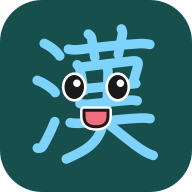

かんじモン
よんで、かいて。ぼうけんに でよう。
きろくを かくにんしています…
はじめの 1回だけ かくにん
以前のゲームを開いている方は、そのタブをすべて閉じてください。はじめて遊ぶ方も、下にチェックして進めます。
きろく・設定
以前のゲームを同時に開かないでください。iPhoneでホーム画面に追加するときは、先に記録ファイルを保存し、追加後に「きろくを もどす」で引き継いでください。
きろくを まもる
この端末の記録
今の記録を置き換えます。先に今の記録ファイルも保存してください。
あそぶ じゅんび
基本の画面を保存すると次から開きやすくなります。まだ全地域のオフライン対応は確認中です。初めて行く場所は通信が必要です。
ホーム画面に 追加
iPhone：共有メニューから「ホーム画面に追加」。Android：ブラウザのメニューから「アプリをインストール」または「ホーム画面に追加」。追加できない場合も、この画面から遊べます。